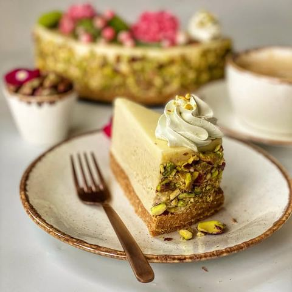

Torta od pistaća bez pečenja

Moja beleška
SačuvanoSastojci
- Recept
Priprema
Za podlogu sipajte mlevenu plazmu, dodajte joj krem, pa istopljen i prohladjen puter i mleko sobne temperature. Smesu povežite kašikom, pa je utisnite na dno kalupa (ja sam koristila kalup širine 22 cm) A onda ostavite na hladjenju dok pripremate fil. Potom mikserom lagano umutite sir sa kremom i u to sipajte slatku pavlaku pa nastavite mućenje dok se smesa lepo ne učvrsti i to je momenat kada dodajete kremfix. Sjedinite lepo i već možete premazati preko podloge i ostaviti u frižideru nekih sat vremena. Sledi ganaš od bele čokolade, za njega je potrebno da čokoladu izlomite na kockice, a slatku pavlaku ugrejete do vrenja, ali ne dopustite da provri. Tako vrelu sipajte preko čokolade, pa sačekajte minut. Onda lepo žicom za mućenje izmešate tako da ne ostane nijedna grudvica čokolade već da bude potpuno tečna i glatka smesa. Prohladjen ganaš prelivate preko torte dok je još u kalupu. I ja sam ovde za to da se torta preko noći ostavi u frižideru, pa ujutru možete dodati po neku voćkicu ili cvetić za dekoraciju. Ukoliko zelite nešto čvršći ganaš onda koristite oko 80 ml slatke pavlake. Za mekši možete sipati 100 ml. Meni je bilo potrebno i nekih 40ak grama pistaća koje sam sitno iseckala i prislonila uz ivice torte za bolji doživljaj i nešto sladji izgled.
Originalni opis sa Instagrama
Hoćemo li da ovaj kišni ponedeljak bojimo u neke lepe tonove..? 🌸Tortica za koju vam ne treba puno vremena, niti puno umeća u kuhinji, koja je spoj tooooliko lepih ukusa-krem od pistaća, mascarpone sira i bele čokolade, koja se ne peče i koja je sjajan izbor onda kada želite malo da pobegnete od klasike i ponudite nešto nesvakidašnje a kremkasto i lepo. 📝Recept: •••Podloga •250 gr mlevene plazme @plazma_zvanicna •100 gr belog krema @podravkasrbija linolada •125 gr istopljenog putera •50 ml mleka •••Fil •1 teglica krema od pistaća @pionir_subotica •500 gr mascarpone sira •200 ml slatke pavlake •1 kremfix •••Preliv 200 gr bele čokolade 80-100 ml slatke pavlake Za podlogu sipajte mlevenu plazmu, dodajte joj krem, pa istopljen i prohladjen puter i mleko sobne temperature. Smesu povežite kašikom, pa je utisnite na dno kalupa (ja sam koristila kalup širine 22 cm) A onda ostavite na hladjenju dok pripremate fil. Potom mikserom lagano umutite sir sa kremom i u to sipajte slatku pavlaku pa nastavite mućenje dok se smesa lepo ne učvrsti i to je momenat kada dodajete kremfix. Sjedinite lepo i već možete premazati preko podloge i ostaviti u frižideru nekih sat vremena. Sledi ganaš od bele čokolade, za njega je potrebno da čokoladu izlomite na kockice, a slatku pavlaku ugrejete do vrenja, ali ne dopustite da provri. Tako vrelu sipajte preko čokolade, pa sačekajte minut. Onda lepo žicom za mućenje izmešate tako da ne ostane nijedna grudvica čokolade već da bude potpuno tečna i glatka smesa. Prohladjen ganaš prelivate preko torte dok je još u kalupu. I ja sam ovde za to da se torta preko noći ostavi u frižideru, pa ujutru možete dodati po neku voćkicu ili cvetić za dekoraciju. Ukoliko zelite nešto čvršći ganaš onda koristite oko 80 ml slatke pavlake. Za mekši možete sipati 100 ml. Meni je bilo potrebno i nekih 40ak grama pistaća koje sam sitno iseckala i prislonila uz ivice torte za bolji doživljaj i nešto sladji izgled. Kako vam se čini..?🌸 • • • #tortabezpecenja #tortaodpistacia #belačokolada #slatkidozivljaji #uspjesnazena #zadovoljnahr #mojirecepti #pistachiocake